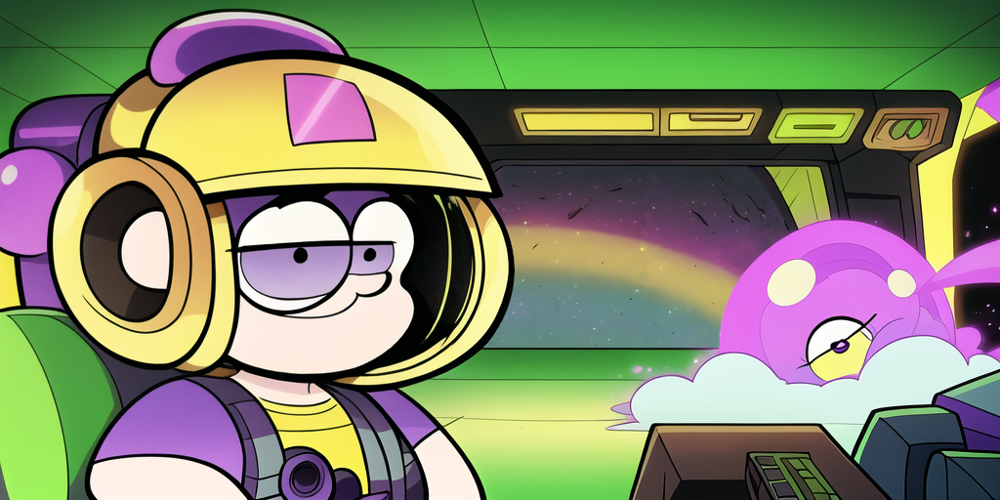

v1.3 - Commander Key

Command Prompt is Toast!
Cmd
Experimental support for Cmd through Clink.
# ~/AppData/Local/clink/carapace.lua
load(io.popen('carapace _carapace cmd-clink'):read("*a"))()

Very early version with a lot of fundamental features not yet working.
Fish
With 4.0b1 onwards the following workaround is not needed anymore:
mkdir -p ~/.config/fish/completions
carapace --list | awk '{print $1}' | xargs -I{} touch ~/.config/fish/completions/{}.fish # disable auto-loaded completions (#185)
Remove the leftover placeholders in
~/.config/fish/completions/.
Bridge
- Switched to
$fish_complete_pathto list available completions in the Fish bridge.This should fix
nix-based installations. - Added another call to
compinitto adopt changes tofpathin the Zsh bridge.At this point it should not be neccessary to call
compinitin the.zshrc.
Git
Added reflog completion.
Freckles
Added Freckles as example project.